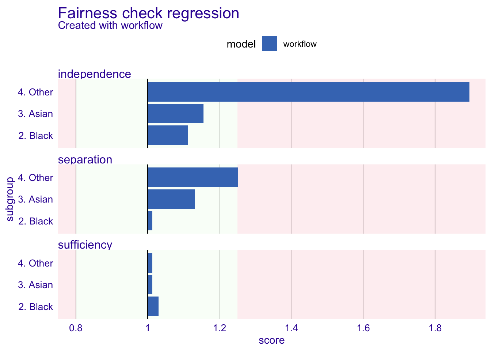

Introduction
Model explainability is a critical component of machine learning (ML) model building. Ludek Stehlik, a great contributor in the people analytics community, recently published an excellent article on the use of the ModelStudio package (R ecosystem) for explaining ML models. Inspired by Ludek’s blog, I’ve created the following blog on the use of the Fairmodels package in R.
Fairmodels, also built by the developers of ModelStudio, is intended for assessing, visualising and mitigating the presence of bias in ML models.
Setup
We’ll begin by loading the required libraries and loading the dataset. The dataset is the Wage data from the ISLR package. In addition, I’ve obtained the average wage by race. This output provides useful context prior to assessing bias in the machine learning model we will build to predict wages.
Code
# Load required libraries
library(tidyverse) # data manipulation
library(tidymodels) # model building
library(DALEX) # model explainer
library(DALEXtra) # model explainer with tidymodels functionality
library(fairmodels) # model fairness check
# Wage data from the ISLR package
wage_tbl <- readr::read_csv(file = "dataset-37830.csv") |>
janitor::clean_names()
# get the average wage by race
wage_tbl |> group_by(race) |> summarise(mean_wage = mean(wage))# A tibble: 4 × 2
race mean_wage
<chr> <dbl>
1 1. White 113.
2 2. Black 102.
3 3. Asian 120.
4 4. Other 90.0Model Preparation
The model preparation involves the following steps:
Convert all character fields to factors and remove redundant fields;
Split the cleaned dataset into Training & Test datasets;
Create a simple recipe for the model building process. More could be done in terms of pre-processing and feature engineering. However, as the focus is on Fairness checks, a simple model will be built to expedite the process.
It is important to note that the Race variable was left in the dataset, but updated to be an “id” field. This ensures that the variable is accessible when needed in our next step, but not utilised in the model building process; and
- The values from the “Protected” variable (i.e., Race) are pulled out from the processed Training dataset and reserved for later use in the Fairness check. This is a critical component to enable the Fairness check.
Code
wage_cleaned_tbl <- wage_tbl %>%
mutate_if(is.character, ~as.factor(.)) |> # update character fields to factors for modelling
select(-c(logwage, sex)) # Remove unnecessary columns
# Split the dataset into training and testing sets
set.seed(123)
data_split <- initial_split(wage_cleaned_tbl, prop = 0.8)
wage_train_tbl <- training(data_split)
wage_test_tbl <- testing(data_split)
# Create a recipe for preprocessing
wage_recipe <- recipe(wage ~ ., data = wage_train_tbl) |>
recipes::update_role(race, new_role = "id")
# save out the protected variable ("Race") for later reference for Fairness checking
protected <- bake(wage_recipe |> prep(), new_data = wage_train_tbl) |> select(race) |> pull()Model Specification
A simple Random Forest model is built and then used, in combination with the recipe, in a Tidymodels Workflow, which is subsequently fit to the training dataset. The Workflow is then used to predict unseen values in the Test dataset, which can be compared to the actual values to “test” the quality of the model, in this case using the RMSE or Root Mean Square Error.
RMSE helps us measure the performance of a regression-based machine learning model by calculating the average difference between predicted and actual values. A lower RMSE means that the model’s predictions are more accurate, just as closer dart throws to the bullseye mean you’re a better dart player.
Code
# Define the model specification
rf_spec <- rand_forest(trees = 1000) |>
set_engine("ranger") |>
set_mode("regression")
# Create a workflow
wage_workflow <- workflow() |>
add_recipe(wage_recipe) |>
add_model(rf_spec)
# Train the model
wage_fit <- fit(wage_workflow, wage_train_tbl)
# Make predictions on the test set
wage_test_pred <- predict(wage_fit, wage_test_tbl) |>
bind_cols(wage_test_tbl)
# Evaluate the model performance
wage_metrics <- metric_set(rmse)
wage_results <- wage_metrics(wage_test_pred, truth = wage, estimate = .pred)
print(wage_results)# A tibble: 1 × 3
.metric .estimator .estimate
<chr> <chr> <dbl>
1 rmse standard 33.6Model Explainer & Fairness Check
First we create the DALEX-based explainer object, which draws upon the fitted Tidymodels Workflow, the training data and our predicted variable, in this instance, Wage. We then use the explainer object to perform a fairness check of the Wage predictions. As the prediction is a value, and not a probability of classification, we use the fairness_check_regression function from Fairmodels.
It is important to note that the creators of the Fairmodels package consider this funtion to be experimental. The documentation on this function states:
“the metrics in use are independence, separation, and sufficiency. The intuition behind this method is that the closer to 1 the metrics are the better. When all metrics are close to 1 then it means that from the perspective of a predictive model there are no meaningful differences between subgroups.”
Printing the fairness check object provides a summary. Plotting the fairness check object provides a detailed and self-explanatory visualisation of the summary. The visualisation clearly delineates those factor levels that pass the fairness check (i.e., values fall within the green zone), as opposed to those that don’t (i.e., values falling within the red zone).
Code
wage_explainer <- DALEXtra::explain_tidymodels(
wage_fit,
data = wage_train_tbl |> select(-wage),
y = wage_train_tbl$wage,
verbose = FALSE
)
model_performance(wage_explainer)Measures for: regression
mse : 946.0564
rmse : 30.75803
r2 : 0.4612749
mad : 14.55176
Residuals:
0% 10% 20% 30% 40% 50%
-102.6445597 -29.0820629 -20.6263656 -13.8813996 -8.8483464 -4.0898662
60% 70% 80% 90% 100%
0.9815948 7.1601028 15.4004204 29.9078928 190.8156705 Code
fairness_object <- fairness_check_regression(wage_explainer,
protected = protected,
privileged = "1. White",
colorize = TRUE)Creating fairness regression object
-> Privileged subgroup : character ([32m Ok [39m )
-> Protected variable : factor ([32m Ok [39m )
-> Fairness objects : 0 objects
-> Checking explainers : 1 in total ( [32m compatible [39m )
-> Metric calculation : 3/3 metrics calculated for all models
[32m Fairness regression object created succesfully [39m Code
print(fairness_object)
Fairness check regression for models: workflow
[31mworkflow passes 1/3 metrics
[39mTotal loss: 1.61128 Code
plot(fairness_object)
Independence, Separation, and Sufficiency are essential metrics when assessing regression-based machine learning models for bias. These metrics help identify potential sources of bias and ensure the reliability and validity of the model’s results.
Independence:
Independence is a metric that measures whether the residuals (the differences between predicted and actual values) are independent of one another. In a well-specified regression model, the residuals should not exhibit any patterns or correlations among themselves.
In our example the Fairness Check suggests that the residuals from the Wage predictions are correlated with the “4. Other” level of the Race variable. This indicates that the model has not adequately accounted for the relationship between the Race predictor and the Wage, which can lead to biased estimates of the effect of Race on Wage. In our example, the “4. Other” group appear to consistently receive lower wage predictions.
Separation:
Separation is a metric that measures whether there is complete separation between predictor variables and the outcome variable. Separation occurs when a certain variable, like the Race of an employee in this example, has an extremely high predictive value for the Wage predicted by the model. While it may be tempting to use this feature to make predictions, doing so could lead to biased outcomes. In our example the “4. Other” level in the Race feature nears being outside the bounds of being acceptable.
Sufficiency:
Sufficiency is a metric that measures whether the sample size is sufficient to support reliable inferences from the regression model. In general, larger sample sizes provide more reliable estimates and better model performance.
With small sample sizes, the risk of overfitting increases, and the model may capture noise rather than true relationships between variables, leading to incorrect conclusions about the significance and magnitude of predictor variables’ effects. In our example, the sample sizes for each level of the Race variable are considered acceptable by the Fairness Check.
We found bias, now what?
Where bias is found to exist various pre and post processing techniques are available to minimise the influence of potential sources of bias. These methods, while beyond the scope of the current article, are supported by the Fairmodels package and are detailed in the supporting package documentation.
Conclusion
In conclusion, Independence, Separation, and Sufficiency are crucial metrics for assessing bias in regression models. By understanding these metrics and diagnosing potential violations, researchers can improve the validity and reliability of their models, ultimately leading to more accurate conclusions about the relationships between variables, and thereby minimise bias toward particular groups.
Reuse
Citation
BibTeX citation:
@online{dmckinnon2023,
author = {Adam D McKinnon},
title = {Assessing {Bias} in {ML} {Models}},
date = {2023-04-17},
url = {https://www.adam-d-mckinnon.com//posts/2023-04-16-assessing_bias_in_ml_models},
langid = {en}
}
For attribution, please cite this work as:
Adam D McKinnon. 2023. “Assessing Bias in ML Models.” April
17, 2023. https://www.adam-d-mckinnon.com//posts/2023-04-16-assessing_bias_in_ml_models.